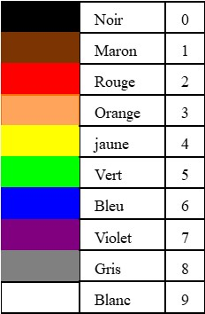

Electronique de base
Code de couleurs des résistances
Les résistances vendues dans le commerce sont marquées avec un code de couleur qui permet de reconnaître leurs valeurs. Les systèmes les plus utilisés sont le système à 4 anneaux et le système à 5 annaux.
Code à 4 anneaux
La lecture se fait de gauche à droite à partir de l'extrémité ou sont groupés les anneaux. Les deux premiers anneaux indiquent la valeur des chiffres significatifs. Le troisième anneau indique le nombre de zéros. Le quatrième anneau indique la tolérance : Or = 5%, Argent = 10 %
Ainsi, la résistance de la figure (V B R Or) a une valeur de : 56 00 Ω ± 5%
Code à 5 anneaux
La lecture se fait de gauche à droite à partir de l'extrémité ou sont groupés les anneaux. Les trois premiers anneaux indiquent la valeur des chiffres significatifs. Le quatrième anneau indique le nombre de zéros. Le cinquième anneau indique la tolérance : Rouge = 2%, Or = 5%, Argent = 10 %
Ainsi, la résistance de la figure (J Vi Ve R Or) a une valeur de : 47500 Ω ± 5%
Valeur normalisées des résistances et condensateurs
Quand on désire acheter une résistance ou un condensateur, on trouve dans le commerce des valeurs biens définies. Les valeurs normalisées sont des séries de valeurs définies par des normes internationales pour assurer que les composants utilisés en électronique sont facilement disponibles et suffisamment précis pour la plupart des applications. Ces valeurs sont regroupées dans des séries appelées séries de préférences E, qui sont normalisées selon les normes de la CEI (Commission électrotechnique internationale).
Les séries les plus courantes pour les résistances et les condensateurs :
- Série E6 : 10, 15, 22, 33, 47, 68
- Série E12 : 100, 120, 150, 180, 220, 270, 330, 390, 470, 560, 680, 820
- Série E24 : 100, 110, 120, 130, 150, 160, 180, 200, 220, 240, 270, 300, 330, 360, 390, 430, 470, 510, 560, 620, 680, 750, 820, 910
Par exemple, dans la série E6, on trouvera les valeurs :
1Ω, 1.5Ω, 2.2Ω, 3.3Ω, 4.7Ω, 6.8Ω,
10Ω, 15Ω, 22Ω, 33Ω, 47Ω, 68Ω,
100Ω, 150Ω, 220Ω, 330Ω, 470Ω, 680Ω,
1kΩ, 1.5kΩ, 2.2kΩ, 3.3kΩ, 4.7kΩ, 6.8kΩ,
10kΩ, 15kΩ, 22kΩ, 33kΩ, 47kΩ, 68kΩ,
100kΩ, 150kΩ, 220kΩ, 330kΩ, 470kΩ, 680kΩ,
1MΩ, 1.5MΩ, 2.2MΩ, 3.3MΩ, 4.7MΩ, 6.8MΩ,
10MΩ, 15MΩ, 22MΩ, 33MΩ, 47MΩ, 68MΩ,
100MΩ, 150MΩ, 220MΩ, 330MΩ, 470MΩ, 680MΩ,
La masse
Quand on parle de tension, il s'agit d'une différence de potentiel entre deux points d'un circuit.
Ainsi, dans la figure ci-dessous, on a :
VAB = VA - VB
VBC = VB - VC

En électronique, on a l'habitude de considérer un point du circuit comme référence de tension (tension zéro) qu'on appelle la masse. Les tensions aux différents points du circuit seront calculées par rapport à ce point. En général, on prend pour masse la borne négative de l'alimentation. Ainsi sur la figure, c'est le point M qui constitue la masse, on a donc VM = 0
Quand on parle de la tension en un point, c'est par rapport à la masse :
- VA est la tension au point A par rapport à la masse (VA - VM)
- VB est la tension au point B par rapport à la masse (VB - VM)
Théorèmes de Millman

Que l'on peut représenter d'une manière plus simple par:

Théorèmes de Thévenin
 La valeur de Veq est déterminée à partir du montage original comme suit:
La valeur de Veq est déterminée à partir du montage original comme suit:
- On déconnecte le reste du montage
- On calcule la tension au point A à l'aide du théorème de Millman

La valeur de Req est déterminée à partir du montage original comme suit:
- On déconnecte le reste du montage
- On annule toutes les sources
- On calcule la résistance entre le point A et la masse

Exemple
Dans le montage suivant, on va remplacer l'étage d'entrée par son équivalent Thévenin pour faciliter le calcul de Ib

Ce qui donne un montage équivalent plus simple

Ce qui permet de calculer Ib en écrivant la loi d'Ohm dans la maille d'entrée
Veq = Req Ib + 0.7 + Re( Ib + βIb )
La diode
- La diode a un composant qui conduit dans un seul sens,
- Elle est réalisée à l'aide d'une jonction PN obtenue en collant un SC (N) à un SC (P) d'où l'appellation diode à Jonction
- Comme on le constate sur la caractéristique tension-courant, Elle a un seuil de conduction. Elle commence à conduire doucement quand VD est de l'ordre de 0.3V . Elle est franchement conductrice quand VD est de l'ordre de 0.7V
- Pour faciliter, on adopte une caractéristique idéalisée
- Vd < 0.7 V ⇒ diode Bloquée (interrupteur ouvert), Id = 0
- Vd = 0.7 V ⇒ diode conductrice, Le courant doit être limité par une résistance


Règle simple :
- Il faut toujours avoir une résistance dans le circuit de la diode pour fixer la valeur du courant quand la diode est passante,
- La résistance peut être d'un coté ou de l'autre. On peut même avoir deux résistances, une de chaque coté,
- Pour savoir si la diode est passante, on compare les tensions de chaque coté du circuit, résistance incluse,
- Si la tension coté Anode est supérieure (d'au moins 0.7V) à la tension coté cathode, alors la diode est passante. La diode pred 0.7V, les reste se retrouve aux bornes de la résistance ce qui permet de déterminer la valeur du courant.

Exemple 1

Calculer la valeur de R pour que le courant I dans le circuit soit égal à 10 mA
Solution :
Vcc = 5V, ⇒ Diode passante, Vd = 0.7V
Vcc = RI + 0.7
R = (Vcc - 0.7)/I
R = (5 - 0.7) / (10 * 10-3) Ω
R = 430 Ω
Exemple 2 :
Calculer la valeur de R pour que la puissance Pd dissipée dans la diode soit égale à 100 mW
Solution :
Vcc = 5V, ⇒ Diode passante, Vd = 0.7V
Pd = 0.7V * Id = 100 mW ⇒ Id = 100 mW / 0.7V
R = (Vcc - 0.7)/Id = (10 - 0.7) * 0.7V / 100mW
R = 65 Ω
Exemple 3 :

Donner l'état de la diode et la valeur du courant Id dans les deux cas suivants:
a) R1 = 1K
b) R1 = 10K
Solution :
On simplifie le montage à l'aide du théorème de Thévenin

Veq = (V1 * R2 + V2 * R1) / (R1 + R2)
Req = (R1 * R2)/ (R1 + R2)
a) R1 = 1K
Veq = 5V, Req = 667 Ω
Veq > 0.7V ⇒ Diode passante, Vd = 0.7V
Id = (5V - 0.7V) / 0.667K = 6.45 mA
b) R1 = 10K
Veq = -2.5V, Req = 1667 Ω
Veq < 0.7V ⇒ Diode bloquée
Id = 0
Exemple 4 :

Solution :
Pour analyser le montage, on se base sur la règle citée plus haut
a) A=0V, B=0V
-
D1 passante , Vd1 = 0,7V = (Vs - VA)
D2 passante , Vd2 = 0.7V = (Vs - VB)
⇒ Vs = 0.7V
b) A=0V, B=5V
-
D1 passante , Vd1 = 0,7V ⇒ Vs = 0.7V
D2 bloquée car Vd2 = (Vs - VB) = 0.7 - 5 = -4.3V
⇒ Vs = 0.7V
c) A=5V, B=0V
-
D2 passante , Vd2 = 0,7V ⇒ Vs = 0.7V
D1 bloquée car Vd1 = (Vs - VA) = 0.7 - 5 = -4.3V
⇒ Vs = 0.7V
d) A=5V, B=5V
-
D1 bloquée ≡ circuit ouvert
D2 bloquée ≡circuit ouvert
⇒ Courant nul dans la résistance
⇒ Vs = Vcc = 5V (Vcc - Vs = RI = 0)

Ce tableau est un tableau électrique. On va essayer de le transformer en table de vérité logique
Si on considère que :
- Une tension faible [0V…1V] ⇒ niveau logique 0
- Une tension forte [4V…5V] ⇒ niveau logique 1
le tableau devient :

C'est la table de vérité d'une porte ET. Nous avons réalisé notre premier circuit logique, premier pas dans le monde numérique

Exemple 5 :

Solution :
Pour analyser le montage, on se base sur la règle citée plus haut
a) A=0V, B=0V
-
D1 bloquée ≡ circuit ouvert
D2 bloquée ≡ circuit ouvert
⇒ Courant nul dans la résistance
⇒ Vs = 0
b) A=0V, B=5V
-
D1 bloquée ≡ circuit ouvert
D2 passante, Vd2 = 0,7V = VB - Vs ⇒ Vs = 5 - 0.7V = 4.3V
b) A=5V, B=0V
-
D1 passante, Vd1 = 0,7V = VA - Vs ⇒ Vs = 5 - 0.7V = 4.3V
D2 bloquée ≡ circuit ouvert
b) A=5V, B=5V
-
D1 passante, Vd1 = 0,7V = VA - Vs
D2 passante, Vd2 = 0,7V = VB - Vs
⇒ Vs = 5 - 0.7V = 4.3V

Ce tableau est un tableau électrique. On va essayer de le transformer en table de vérité logique
Si on considère que :
- Une tension faible [0V…1V] ⇒ niveau logique 0
- Une tension forte [4V…5V] ⇒ niveau logique 1
le tableau devient :
C'est la table de vérité d'une porte OU

Redressement Mono-alternance :
Le redressement des signaux alternatifs est une fonction importante en électronique. L'usage le plus courant consiste à convertir le courant alternatif (CA) en courant continu (CC). Cette conversion est essentielle dans de nombreux appareils électroniques qui nécessitent une alimentation en courant continu.

Pendant l'alternance positive, dès que Ve devient > 0.7V, la diode devient passante, (Vd = 0.7V). La tension de sortie Vs suit Ve à 0.7V près, sa valeur crête est égale à E' = E - 0.7
Pendant l'alternance négative, la diode se bloque. Elle est équivalente à un interrupteur ouvert, la tension de sortie est égale à 0.
On constate sur la Figure que la tension de sortie est toujours positive mais elle est encore loin d'être continue.
La composante continue est égale à la valeur moyenne

La tension redressée peut dans certains cas être utilisée pour alimenter un moteur à courant continu. Le moteur tournera comme s'il était alimenté par une tension continue égale à la valeur moyenne
Tension inverse maximale
A l'instant 3π/2, la tension inverse aux bornes de la diode atteint sa valeur maximale :
Vd = Ve - Vs = -E - 0 = -E
Cette tension ne doit pas dépasser la valeur précisée dans la datasheet
Voici un exemple de datasheet:

Redressement Double-alternance, transfo à point milieu :
Si on prend le point milieu du transformateur comme référence, les tensions de sortie du transformateur V1 et V2 sont en opposition de phase.

Pendant l'alternance positive de V1, (négative de V2), la diode D1 conduit et alimente la charge. D2 est bloquée
Vs = V1 - 0.7

Pendant l'alternance positive de V2, (négative de V1), la diode D2 conduit et alimente la charge. D1 est bloquée
Vs = V2 - 0.7
La charge est ainsi alimentée pendant les deux alternances. La tension Vs est représentée sur la Figure ci-dessous. Sa valeur max est E'= E -0.7

La composante continue est égale à la valeur moyenne

Tension inverse maximale
Pendant la première alternance, la diode D2 est bloquée. A l'instant π/2, elle subit sa tension inverse la plus importante
- La tension sur son Anode est : VA = V2(π/2) = -E
- La tension sur sa cathode est: VK = Vs(π/2) = E'
- La tension inverse est : VRM = VK - VA = E' - (-E) = E - 0.7 + E = 2E - 0.7
Redressement Double-alternance, montage à pont :
Ici on utilise un transformateur simple et un pont redresseur à 4 diodes

A 'entrée du pont, on a un signal sinusoidal simple
Pendant l'alternance positive de Ve, les diodes D1 et D2 sont passantes et alimentent la charge. Les diodes D3 et D4 sont bloquées
Vs = Ve - 2x0.7

Pendant l'alternance négative de Ve, les diodes D3 et D4 sont passantes et alimentent la charge dans le même sens que précédemment. Les diodes D1 et D2 sont bloquées
Vs = Ve - 2x0.7

La charge est ainsi alimentée pendant les deux alternances. La tension Vs est représentée sur la Figure ci-dessous. Sa valeur max est E'= E -2x0.7
La composante continue est égale à la valeur moyenne
Tension inverse maximale
Pendant la première alternance, la diode D3 est bloquée. A l'instant π/2, elle subit sa tension inverse la plus importante
- La tension sur sa cathode est: VK = Ve(π/2) - Vd1 = E - 0.7
- La tension sur son Anode est : VA = 0 (référence)
- La tension inverse est : VRM = VK - VA = E - 0.7 - 0 = E - 0.7
Filtrage par condensateur en tête

Le filtrage est réalisé à l'aide d'un condensateur de forte valeur placé en parallèle avec la charge RL
Pendant la demi-période positive, dès que Ve>0.7V, la diode conduit. Le condensateur commence à se charger jusqu'à ce que Ve atteigne sa valeur de crête E, Vs est alors égale à E'=E-0.7 (point b). A cause de la résistance quasi nulle de la diode, la charge du condensateur suit parfaitement la tension d'entrée Ve, elles sont juste décalées de 0.7V. Dès que Ve commence à diminuer, Vs ne peut pas la suivre car le condensateur est chargé, la diode se bloque, Le condensateur se décharger alors dans la charge RL avec la constante de temps τ = RL C. Quand on arrive au point a, Ve devient supérieure à Vs, la diode conduit, et le condensateur se charge de nouveau jusqu'à E'=E-07. On est arrivé au point b, le cycle recommence
La diode ne conduit que pendant les intervalles [a, b], le reste du temp, c'est le condensateur qui alimente la charge
Si la valeur de C est importante, la décharge est lente et quasi-horizontale. L'allure de Vs s'approchant d'une tension continue.
Calcul de l'ondulation ΔV
On va commencer par le redressement mono-alternance

Le calcul exact de l'ondulation n'est pas évident. On va faire une approximation.
L'équation de Vs pendant la décharge est : Vs = E' e-t/(RC)
Si on note E1 la valeur de Vs à l'instant to, on aura :
E1= E' e-to/(RC), ΔV = E'- E1
La valeur de E1 est très difficile à calculer car on ne connaît pas la valeur de to, (instant de l'intersection d'une exponentielle et un sinus)
Si la valeur de C est importante, la décharge est quasi horizontale, l'instant to sera très proche de la période T. La valeur de E2 = Vs(T) sera très proche de E1.
E1= E' e-T/(RC)
ΔV = E'- E2 = E' - E'e-T/(RC) = E'( 1-e - T/(RC) )
On va encore simplifier cette expression en utilisant l'approximation e x ≈ 1 + x pour x faible
Pour cela il faut d'abord vérifier que Le terme -T/(RC) est faible devant l'unité
Prenons un exemple réaliste :
On désire réaliser une alim (5V, 100mA) :
E'≈ 5V
R = 5V/0,1A = 50 Ω
Choisissons C = 4700 µF
f = 50 Hz, ⇒ T = 20 ms
T/(RC) = 20 m / (50 . 4700 µ) = 0.08
Cette valeur justifie l'approximation
ΔV = E'( 1 - (1 - T/(RC)) )
ΔV = E'/(RCf)
En général la résistance de charge R n'est pas connue. C'est plutôt le courant Io que l'alimentation doit être capable délivrer à la charge qui est défini
E' = R Io ⇒ R = E'/Io
ΔV = E'/(RCf) = Io/(Cf)
Pour le redressement double-alternance, le calcul est le même sauf qu'il faut remplacer T par T/2

ΔV = E'/(2RCf) = Io / (2Cf)
Le transistor bipolaire
Cette section est en cours de rédaction